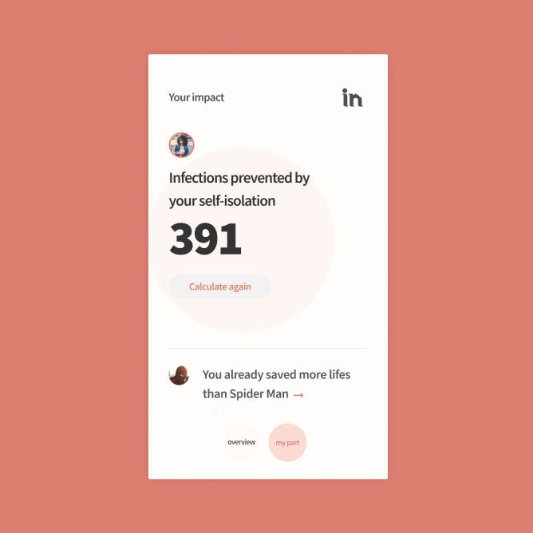

In Simulator
Concept • Abr 2020
Brazilian teachers have 12 hours per day work routines:
the work also occupies their personal lives, this tool
was created to give their time back. I was the only designer
responsible for this product, working with two and a half developers.
Context
The search tool is the first product my team built in the Descomplica's new business unity: products for schools
In December 2019 I was invited to the first B2B team of Descomplica. We started facing the challenge of the fresh business model and a new universe of problems and opportunities to make teacher's lives better.
After all, teachers are the ones who choose which pedagogic assets integrate the school and the classroom.
SIMULATOR MEDIA
In fulfill the role of a simulator media
As it abstracts complex data in a material that can be used to incentive people to stay at home.
